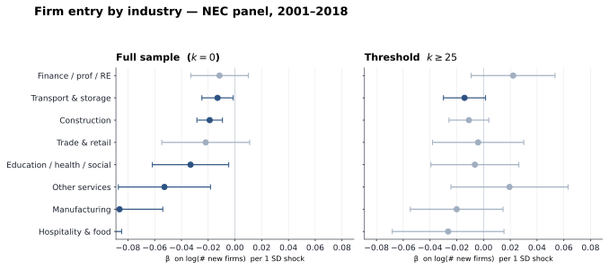
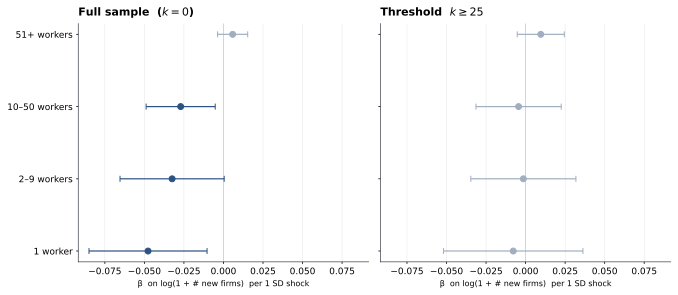
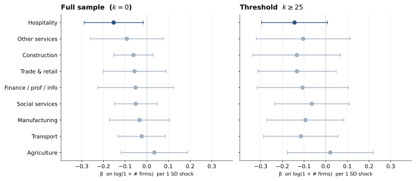

Combines the shifter (destination FX, common across all Nepali munis) with the shares (each muni's 2001 destination mix). Standardised on the working sample before estimation.
$\mathbf{X}_{m(i),0}$ = 2001 destination-weighted characteristics: six destination-region migrant shares + destination-weighted GDP per capita.
Entity FE $\alpha_m$: muni for census panel, HH for HRVS HH panel.
SE clustered at the municipality.
Reported $\beta$: $\mathrm{fx}_z \times \log(\mathrm{mig\_int}_z)$.
SE in (), % of mean in []. *** $p<0.01$, ** $p<0.05$, * $p<0.10$.
SE clustered at municipality. FE: muni + year for (1); HH + year for (2) & (3).
Reported $\beta$: $\mathrm{fx}_z \times \log(\mathrm{mig\_int}_z)$. SE in (), % of mean in [].
*** $p<.01$, ** $p<.05$, * $p<.10$. SE clustered at municipality. FE: muni + year.
Durables per HH: mean count of household durable categories owned (0–12 scale: radio, TV, mobile, computer, internet, landline, bike, motorbike, car, fridge, +2).
Modern housing: share of dwellings with cement/concrete/RCC foundation.
Toilet adoption: share of HHs with any toilet.
Durables and modern housing measured in 2011/2021 only.
Reported $\beta$: $\mathrm{fx}_z \times \log(\mathrm{mig\_int}_z)$. SE in (), % of mean in [].
*** $p<.01$, ** $p<.05$, * $p<.10$. SE clustered at municipality.
FE: muni + year for (1)–(3); HH + year for (4).
Literacy / attendance: census shares (pop 6+ / children 6–16).
Health spending: HH-level out-of-pocket Rs (medicines + hospital + other); baseline mean Rs 12,400.
Reported $\beta$: $\mathrm{fx}_z \times \log(\mathrm{mig\_int}_z)$. SE in (), % of mean in [].
*** $p<.01$, ** $p<.05$, * $p<.10$. SE clustered at municipality. FE: muni + year.
Sector defined by census industry of usual occupation; the 11 census categories sum to 1 within muni-year.
Five small tertiary sectors not shown (transport, education, health, arts, others) had no robust pattern; their joint share averages ~0.10.
Reported $\beta$: $\mathrm{fx}_z \times \log(\mathrm{mig\_int}_z)$. SE in (), % of mean in [].
*** $p<.01$, ** $p<.05$, * $p<.10$. SE clustered at municipality. FE: muni + year.
Occupation: ISCO major group of usual occupation. Agricultural occupations, office assistants, elementary occupations, and armed forces are not shown — pattern null or unstable; their joint share averages ~0.81.
Reported $\beta$: $\mathrm{fx}_z \times \log(\mathrm{mig\_int}_z)$. SE in (), % of mean in [].
*** $p<.01$, ** $p<.05$, * $p<.10$. SE clustered at municipality. FE: HH + year.
All outcomes from HRVS HH × year, 2016/17/18. Shares are at plot-share level within each HH-season-year.
Crop diversity = Simpson index, 1 − Σpᵢ² over share of cultivated area across crops; 0 = monoculture, ~0.9 = perfectly balanced. Mean .22 ⇒ most HH concentrate in 1–2 crops.
Fallow shares are directionally positive (more land left fallow in high-shock munis), economically large (+10 to +23% of mean) but never sig at p<.10 in the 3-year HH FE panel.
Horticulture (row 7): 62% of HH grow no horticulture; the −18.5pp effect concentrates among the 38% who do.
Reported $\beta$: $\mathrm{fx}_z \times \log(\mathrm{mig\_int}_z)$. SE in (), % of mean in [].
*** $p<.01$, ** $p<.05$, * $p<.10$. SE clustered at municipality. FE: HH + year.
Outcomes 1–3 are HH-level binary; rows 4–5 are $\log(1 + \mathrm{Rs})$ to handle the long right tail.
Rows 1–3 use the input-module subsample (HHs that report input usage).
Total input cost = sum of fertiliser + seed + insecticide + equipment + hired-labour across wet and dry seasons.
Reported $\beta$: $\mathrm{fx}_z \times \log(\mathrm{mig\_int}_z)$. SE in (), % of mean in [].
*** $p<.01$, ** $p<.05$, * $p<.10$. SE clustered at municipality. FE: HH + year.
Non-food categories are large in % of mean and consistently positive, but never sig at p<.10 (high SE in the 3-year HH panel).
Clothing and fuel & lighting are the cleanest individual positive results.
Food insecurity moves directionally down; total food expenditure is flat.
Reading the pattern: food spending unchanged but non-food up — consistent with Engel's law (food share of consumption falls as income rises).
Heterogeneity (next slide) shows food insecurity rising sharply in internal out-flow munis where the welfare gains haven't materialised.
Heterogeneity: household & population
Outcome
Full
Internal in-flow
Internal out-flow
Migrant-HH share
+0.63**
+0.74**
+2.85***
mean .24
(0.28)
(0.33)
(0.49)
[+0.6pp]
[+0.7pp]
[+2.8pp]
log(intl remit, Rs)
+0.497
+0.556
-0.243
mean 7.30
(0.345)
(0.406)
(0.565)
[+50%]
[+56%]
[-24%]
log(# intl migrants)
+0.037*
+0.029
-0.016
mean 0.53
(0.019)
(0.025)
(0.024)
[+4%]
[+3%]
[-2%]
Outcome
Full
Rural
Urban
Migrant-HH share
+0.63**
+1.27***
-0.13
mean .24
(0.28)
(0.39)
(0.43)
[+0.6pp]
[+1.3pp]
[-0.1pp]
log(intl remit, Rs)
+0.497
-0.366
+1.592***
mean 7.30
(0.345)
(0.365)
(0.596)
[+50%]
[-37%]
[+159%]
log(# intl migrants)
+0.037*
-0.003
+0.090***
mean 0.53
(0.019)
(0.021)
(0.034)
[+4%]
[-0%]
[+9%]
Outcome
Full
Internal in-flow
Internal out-flow
Durables per household
+0.061**
+0.051*
+0.030
mean 2.89
(0.025)
(0.030)
(0.051)
[+6%]
[+5%]
[+3%]
Modern housing
+2.10***
+0.69
+0.62
mean .28
(0.64)
(0.77)
(1.28)
[+2.1pp]
[+0.7pp]
[+0.6pp]
Toilet adoption
+5.87***
+6.30***
+6.96***
mean .66
(0.78)
(0.92)
(1.51)
[+5.9pp]
[+6.3pp]
[+7.0pp]
Outcome
Full
Rural
Urban
Durables per household
+0.061**
+0.100***
+0.032
mean 2.89
(0.025)
(0.036)
(0.036)
[+6%]
[+10%]
[+3%]
Modern housing
+2.10***
+2.98***
+0.78
mean .28
(0.64)
(0.92)
(0.86)
[+2.1pp]
[+3.0pp]
[+0.8pp]
Toilet adoption
+5.87***
+5.14***
+6.59***
mean .66
(0.78)
(0.98)
(1.09)
[+5.9pp]
[+5.1pp]
[+6.6pp]
Outcome
Full
Internal in-flow
Internal out-flow
Literate (pop 6+)
+0.74***
+1.11***
+0.39
mean .64
(0.21)
(0.24)
(0.44)
[+0.7pp]
[+1.1pp]
[+0.4pp]
Literate, female
+1.04***
+1.41***
+0.57
mean .55
(0.24)
(0.27)
(0.49)
[+1.0pp]
[+1.4pp]
[+0.6pp]
School attendance 6–16
+0.90***
+1.13***
+0.88
mean .84
(0.24)
(0.29)
(0.62)
[+0.9pp]
[+1.1pp]
[+0.9pp]
Health spending — total (Rs)
+6,603**
+8,691**
+2,811
mean Rs 12,401
(2,657)
(3,506)
(2,013)
[+53%]
[+70%]
[+23%]
Outcome
Full
Rural
Urban
Literate (pop 6+)
+0.74***
+0.42
+1.31***
mean .64
(0.21)
(0.30)
(0.27)
[+0.7pp]
[+0.4pp]
[+1.3pp]
Literate, female
+1.04***
+0.84**
+1.45***
mean .55
(0.24)
(0.35)
(0.29)
[+1.0pp]
[+0.8pp]
[+1.4pp]
School attendance 6–16
+0.90***
+0.75**
+1.18***
mean .84
(0.24)
(0.33)
(0.38)
[+0.9pp]
[+0.8pp]
[+1.2pp]
Health spending — total (Rs)
+6,603**
+30
+11,717**
mean Rs 12,401
(2,657)
(2,377)
(5,598)
[+53%]
[+0%]
[+99%]
Outcome
Full
Internal in-flow
Internal out-flow
Agriculture (primary)
-0.56
-0.27
-0.75
mean .70
(0.39)
(0.45)
(0.97)
[-0.6pp]
[-0.3pp]
[-0.8pp]
Manufacturing (secondary)
+0.02
-0.03
-0.32
mean .05
(0.13)
(0.16)
(0.19)
[+0.0pp]
[-0.0pp]
[-0.3pp]
Construction (secondary)
+0.78***
+0.61***
+0.80**
mean .04
(0.17)
(0.18)
(0.37)
[+0.8pp]
[+0.6pp]
[+0.8pp]
Trade & retail (tertiary)
-0.07
-0.08
+0.07
mean .07
(0.13)
(0.17)
(0.26)
[-0.1pp]
[-0.1pp]
[+0.1pp]
Finance / RE / prof. (tertiary)
-0.21***
-0.24***
-0.03
mean .013
(0.07)
(0.07)
(0.06)
[-0.2pp]
[-0.2pp]
[-0.0pp]
Public admin (tertiary)
+0.07
+0.41*
-0.16
mean .017
(0.13)
(0.24)
(0.11)
[+0.1pp]
[+0.4pp]
[-0.2pp]
Outcome
Full
Rural
Urban
Agriculture (primary)
-0.56
-1.30**
+0.09
mean .70
(0.39)
(0.56)
(0.55)
[-0.6pp]
[-1.3pp]
[+0.1pp]
Manufacturing (secondary)
+0.02
-0.27*
+0.34
mean .05
(0.13)
(0.14)
(0.21)
[+0.0pp]
[-0.3pp]
[+0.3pp]
Construction (secondary)
+0.78***
+0.99***
+0.44**
mean .04
(0.17)
(0.25)
(0.20)
[+0.8pp]
[+1.0pp]
[+0.4pp]
Trade & retail (tertiary)
-0.07
+0.19
-0.28
mean .07
(0.13)
(0.15)
(0.25)
[-0.1pp]
[+0.2pp]
[-0.3pp]
Finance / RE / prof. (tertiary)
-0.21***
-0.05
-0.44***
mean .013
(0.07)
(0.09)
(0.10)
[-0.2pp]
[-0.0pp]
[-0.4pp]
Public admin (tertiary)
+0.07
-0.02
+0.39**
mean .017
(0.13)
(0.18)
(0.19)
[+0.1pp]
[-0.0pp]
[+0.4pp]
Outcome
Full
Internal in-flow
Internal out-flow
Managers (high-skill)
-0.41***
-0.50***
-0.26*
mean .021
(0.11)
(0.15)
(0.15)
[-0.4pp]
[-0.5pp]
[-0.3pp]
Professionals (high-skill)
+0.04
-0.03
+0.08
mean .034
(0.05)
(0.06)
(0.11)
[+0.0pp]
[-0.0pp]
[+0.1pp]
Technicians (mid-high)
-0.09**
-0.10
+0.05
mean .014
(0.04)
(0.06)
(0.08)
[-0.1pp]
[-0.1pp]
[+0.0pp]
Service & sales (mid)
-0.13
-0.02
-0.28
mean .057
(0.12)
(0.18)
(0.18)
[-0.1pp]
[-0.0pp]
[-0.3pp]
Craft & trades (manual)
+0.26*
+0.20
-0.04
mean .064
(0.15)
(0.18)
(0.27)
[+0.3pp]
[+0.2pp]
[-0.0pp]
Machine operators (manual)
+0.22***
+0.18**
-0.11
mean .018
(0.07)
(0.09)
(0.07)
[+0.2pp]
[+0.2pp]
[-0.1pp]
Outcome
Full
Rural
Urban
Managers (high-skill)
-0.41***
-0.09
-0.70***
mean .021
(0.11)
(0.11)
(0.18)
[-0.4pp]
[-0.1pp]
[-0.7pp]
Professionals (high-skill)
+0.04
+0.09
-0.10
mean .034
(0.05)
(0.06)
(0.08)
[+0.0pp]
[+0.1pp]
[-0.1pp]
Technicians (mid-high)
-0.09**
-0.09**
-0.13*
mean .014
(0.04)
(0.04)
(0.07)
[-0.1pp]
[-0.1pp]
[-0.1pp]
Service & sales (mid)
-0.13
-0.18
+0.02
mean .057
(0.12)
(0.14)
(0.22)
[-0.1pp]
[-0.2pp]
[+0.0pp]
Craft & trades (manual)
+0.26*
-0.07
+0.57***
mean .064
(0.15)
(0.20)
(0.21)
[+0.3pp]
[-0.1pp]
[+0.6pp]
Machine operators (manual)
+0.22***
+0.17**
+0.29**
mean .018
(0.07)
(0.08)
(0.12)
[+0.2pp]
[+0.2pp]
[+0.3pp]
Outcome
Full
Internal in-flow
Internal out-flow
Own-cultivated land, wet season
-3.74**
-1.95
-3.86**
mean .84
(1.79)
(2.59)
(1.72)
[-3.7pp]
[-2.0pp]
[-3.9pp]
Own-cultivated land, dry season
-5.60
-0.70
-9.80
mean .65
(4.17)
(5.98)
(6.23)
[-5.6pp]
[-0.7pp]
[-9.8pp]
Cultivated both seasons
-5.87
-0.51
-9.48
mean .65
(3.95)
(5.85)
(6.18)
[-5.9pp]
[-0.5pp]
[-9.5pp]
Fallow land, wet season
+1.37
-0.22
+3.39**
mean .08
(1.41)
(1.82)
(1.27)
[+1.4pp]
[-0.2pp]
[+3.4pp]
Fallow land, dry season
+4.61
-0.30
+8.42
mean .28
(4.26)
(6.32)
(6.37)
[+4.6pp]
[-0.3pp]
[+8.4pp]
Crop diversity (Simpson)
-12.52***
-5.74
-2.57
mean .22
(3.75)
(4.97)
(7.71)
[-12.5pp]
[-5.7pp]
[-2.6pp]
Grows any horticulture crop
-18.53***
-21.68***
-13.26**
mean .38
(5.39)
(7.23)
(5.67)
[-18.5pp]
[-21.7pp]
[-13.3pp]
Outcome
Full
Rural
Urban
Own-cultivated land, wet season
-3.74**
-2.90
-3.28
mean .84
(1.79)
(1.90)
(3.21)
[-3.7pp]
[-2.9pp]
[-3.3pp]
Own-cultivated land, dry season
-5.60
-6.55
-6.63
mean .65
(4.17)
(4.88)
(6.35)
[-5.6pp]
[-6.5pp]
[-6.6pp]
Cultivated both seasons
-5.87
-7.62
-4.81
mean .65
(3.95)
(4.60)
(6.17)
[-5.9pp]
[-7.6pp]
[-4.8pp]
Fallow land, wet season
+1.37
+1.64
+1.41
mean .08
(1.41)
(1.58)
(2.78)
[+1.4pp]
[+1.6pp]
[+1.4pp]
Fallow land, dry season
+4.61
+6.02
+7.32
mean .28
(4.26)
(5.04)
(6.86)
[+4.6pp]
[+6.0pp]
[+7.3pp]
Crop diversity (Simpson)
-12.52***
-6.49
-15.00**
mean .22
(3.75)
(4.69)
(6.53)
[-12.5pp]
[-6.5pp]
[-15.0pp]
Grows any horticulture crop
-18.53***
-16.26**
-21.17**
mean .38
(5.39)
(6.36)
(8.87)
[-18.5pp]
[-16.3pp]
[-21.2pp]
Outcome
Full
Internal in-flow
Internal out-flow
Owns plough
+0.82
+4.51
+7.81
mean .52
(4.11)
(5.21)
(4.88)
[+0.8pp]
[+4.5pp]
[+7.8pp]
Owns powered farm machinery
-0.24
+1.76
-1.50
mean .03
(1.36)
(1.99)
(1.30)
[-0.2pp]
[+1.8pp]
[-1.5pp]
Owns irrigation equipment
+5.44
+14.38*
+7.33*
mean .11
(4.82)
(7.73)
(4.10)
[+5.4pp]
[+14.4pp]
[+7.3pp]
Total input cost (log Rs)
-0.473
-0.350
-0.492
mean 6.35
(0.304)
(0.307)
(0.478)
[-47%]
[-35%]
[-49%]
Seed cost, dry season (log Rs)
-1.186***
-0.949*
-0.675
mean 1.94
(0.380)
(0.531)
(0.502)
[-119%]
[-95%]
[-68%]
Outcome
Full
Rural
Urban
Owns plough
+0.82
+2.04
+2.01
mean .52
(4.11)
(4.32)
(8.60)
[+0.8pp]
[+2.0pp]
[+2.0pp]
Owns powered farm machinery
-0.24
+1.03
-2.30
mean .03
(1.36)
(1.26)
(3.23)
[-0.2pp]
[+1.0pp]
[-2.3pp]
Owns irrigation equipment
+5.44
+0.88
+13.66
mean .11
(4.82)
(4.45)
(10.43)
[+5.4pp]
[+0.9pp]
[+13.7pp]
Total input cost (log Rs)
-0.473
-0.956**
-0.443
mean 6.35
(0.304)
(0.415)
(0.395)
[-47%]
[-96%]
[-44%]
Seed cost, dry season (log Rs)
-1.186***
-1.145**
-1.280*
mean 1.94
(0.380)
(0.459)
(0.673)
[-119%]
[-114%]
[-128%]
Outcome
Full
Internal in-flow
Internal out-flow
Food spending, weekly (Rs)
+2
+15
-477**
mean Rs 2,282
(120)
(106)
(216)
[+0%]
[+1%]
[-19%]
Protein spending, weekly (Rs)
-13
+5
-137
mean Rs 724
(68)
(75)
(115)
[-2%]
[+1%]
[-18%]
Non-food spending, annual (Rs)
+44,313
+76,311
-20,247
mean Rs 97,932
(32,679)
(50,085)
(28,403)
[+45%]
[+75%]
[-24%]
Clothing & footwear, annual (Rs)
+2,636**
+3,843**
-1,360
mean Rs 12,151
(1,200)
(1,520)
(2,041)
[+22%]
[+32%]
[-11%]
Fuel & lighting, annual (Rs)
+647
+360
+720
mean Rs 4,760
(542)
(711)
(527)
[+14%]
[+7%]
[+16%]
Food insecurity score (HFIAS, 0–27)
-0.046
+0.079
+0.769**
mean 0.77
(0.222)
(0.319)
(0.362)
[-5%]
[+8%]
[+77%]
Outcome
Full
Rural
Urban
Food spending, weekly (Rs)
+2
-70
+44
mean Rs 2,282
(120)
(150)
(174)
[+0%]
[-3%]
[+2%]
Protein spending, weekly (Rs)
-13
-2
+6
mean Rs 724
(68)
(77)
(106)
[-2%]
[-0%]
[+1%]
Non-food spending, annual (Rs)
+44,313
+6,924
+118,159*
mean Rs 97,932
(32,679)
(26,362)
(69,177)
[+45%]
[+7%]
[+118%]
Clothing & footwear, annual (Rs)
+2,636**
+1,462
+3,277*
mean Rs 12,151
(1,200)
(1,328)
(1,837)
[+22%]
[+12%]
[+27%]
Fuel & lighting, annual (Rs)
+647
+422
+664
mean Rs 4,760
(542)
(521)
(1,047)
[+14%]
[+10%]
[+13%]
Food insecurity score (HFIAS, 0–27)
-0.046
-0.157
+0.053
mean 0.77
(0.222)
(0.328)
(0.357)
[-5%]
[-16%]
[+5%]
All coefficients at $k\geq 25$ baseline migrants per muni, anchor spec (treatment + year × mig_int + year × fx + year × Block A; muni + year FE). SE in parens (cluster: muni); *** $p<.01$, ** $p<.05$, * $p<.10$. Effect column [ ]: percentage points (pp) for share outcomes, approximate % change for log outcomes, % of sample mean for rupee amounts. Means shown are the regression-sample (k ≥ 25) means, not the raw-data population; k=25 munis are wealthier and more migration-exposed than the average Nepalese muni. Internal migration: classification uses 2001 census internal migration flows. Internal in-flow muni = more people moved into the muni from elsewhere in Nepal than moved out; internal out-flow = reverse. Fixed at 2001 baseline (predetermined). Rural / Urban: rural = Gaunpalika; urban = Nagar/Upamahanagar/Mahanagarpalika. NEC panel covers founding years 2001–2018 (annual); NEC cross-section is 2018 stock.
Reported $\beta$: $\mathrm{fx}_z \times \log(\mathrm{mig\_int}_z)$. SE in (), approximate % change in []
(for log outcomes, the bracketed value is $100 \cdot \beta$, the proportional response).
*** $p<.01$, ** $p<.05$, * $p<.10$. SE clustered at municipality. FE: muni + cohort-year.
Source: NEC 2018 firm census, panel of surviving firms by founding year 2001–2018.
Outcome: $\log(1 + \text{count})$ so the coefficient is interpretable as an approximate proportional change
(a $\beta$ of $-0.05$ ≈ 5% fewer new firms per year per 1-SD shock to the shift-share treatment).
Same outcome scale as the forest plots (slides 14–15) and the heterogeneity slide.
Reported $\beta$: $\mathrm{fx}_z \times \log(\mathrm{mig\_int}_z)$. SE in (), % of mean in [].
*** $p<.01$, ** $p<.05$, * $p<.10$. SE clustered at district. FE: district only (true cross-section, 2018).
log-totals are $\log(1 + \mathrm{value})$; baseline X (Block A) entered as levels in the cross-section.
Per-worker productivity measures (mean rev/worker, mean VA/worker, etc.) omitted — long-tailed and noisy; results available on request.
Capital and revenue totals are right-skewed (max/mean > 250×): log transformation absorbs the tail, but point estimates remain less precise than firm-count outcomes.
Firm entry by industry — coefficient plot

Forest plot of $\beta$ on $\log(1 + \text{new firms})$ by industry at the preferred anchor spec
(log_int treatment, $C_{\text{mig}}$, $C_{\text{fx}}$ and Block A controls).
Horizontal bars = 95% confidence interval; navy = $p<.10$, grey = $p \geq .10$.
Left panel: full sample ($k=0$, $n=12{,}852$); every industry shows a negative entry effect, eight of eight significant at $p<.10$, hospitality and manufacturing most negative.
Right panel: high-baseline-migration sample ($k\geq 25$); point estimates remain negative for most industries but SEs widen; only transport & storage retains significance.
The decay illustrates a power problem rather than a finding switch — the firm panel shrinks faster than the census/HRVS panels as the threshold tightens.
Firm entry by size — coefficient plot

Forest plot of $\beta$ on $\log(1 + \text{# new firms})$ by firm-size bucket, NEC panel 2001–2018.
Anchor spec (log_int + $C_{\text{mig}}$ + $C_{\text{fx}}$ + Block A). Navy = $p<.10$, grey = $p\geq.10$; bars are 95% CIs.
Reading: at the full sample ($k=0$), micro (1 worker), small (2–9) and medium (10–50) firms all see fewer entrants in high-shock munis. Large firms (51+) are unaffected — possibly because they are rare and externally financed. People in high-migration places don't start small businesses; they go abroad.
# firms by industry — NEC 2018 cross-section

Forest plot of $\beta$ on $\log(1 + \text{# firms})$ by industry, NEC 2018 cross-section (one observation per municipality, $n=714$).
Anchor spec at the cross-section level (Block A entered as levels, no year-interaction). Navy = $p<.10$; bars are 95% CIs.
Reading: every industry except agriculture is directionally negative, but power is much lower than in the NEC panel (one cross-section vs 18 cohort-years).
Hospitality is the only individually significant industry (−15% at $k=0$ **, −14% at $k\geq25$ *).
Same pattern as the NEC panel — direction of the firm-suppression effect is robust, statistical sharpness comes from pooling cohorts.
Heterogeneity: firm side
Outcome
Full
Internal in-flow
Internal out-flow
Total new firms
-0.007
+0.005
-0.045
mean 3.35
(0.016)
(0.020)
(0.037)
[-1%]
[+0%]
[-4%]
Size: 1-worker
-0.008
-0.009
-0.078*
mean 2.40
(0.022)
(0.032)
(0.046)
[-1%]
[-1%]
[-8%]
Size: 2–9 workers
-0.001
+0.010
-0.024
mean 2.81
(0.016)
(0.021)
(0.041)
[-0%]
[+1%]
[-2%]
Size: 10–50 workers
-0.004
-0.020
-0.017
mean 0.74
(0.013)
(0.018)
(0.023)
[-0%]
[-2%]
[-2%]
Industry: Manufacturing
-0.020
-0.024
-0.068
mean 1.50
(0.017)
(0.022)
(0.043)
[-2%]
[-2%]
[-7%]
Industry: Trade & retail
-0.004
+0.010
-0.036
mean 2.70
(0.017)
(0.022)
(0.039)
[-0%]
[+1%]
[-4%]
Industry: Hospitality & food
-0.026
-0.046
-0.102**
mean 1.52
(0.021)
(0.028)
(0.041)
[-3%]
[-5%]
[-10%]
Outcome
Full
Rural
Urban
Total new firms
-0.007
+0.031
-0.043*
mean 3.35
(0.016)
(0.022)
(0.022)
[-1%]
[+3%]
[-4%]
Size: 1-worker
-0.008
+0.038
-0.045*
mean 2.40
(0.022)
(0.028)
(0.026)
[-1%]
[+4%]
[-4%]
Size: 2–9 workers
-0.001
+0.042*
-0.047*
mean 2.81
(0.016)
(0.022)
(0.025)
[-0%]
[+4%]
[-5%]
Size: 10–50 workers
-0.004
-0.015
-0.004
mean 0.74
(0.013)
(0.018)
(0.023)
[-0%]
[-1%]
[-0%]
Industry: Manufacturing
-0.020
+0.019
-0.073***
mean 1.50
(0.017)
(0.021)
(0.026)
[-2%]
[+2%]
[-7%]
Industry: Trade & retail
-0.004
+0.035
-0.035
mean 2.70
(0.017)
(0.023)
(0.024)
[-0%]
[+4%]
[-3%]
Industry: Hospitality & food
-0.026
+0.036
-0.096***
mean 1.52
(0.021)
(0.026)
(0.031)
[-3%]
[+4%]
[-10%]
Outcome
Full
Internal in-flow
Internal out-flow
log(# firms)
-0.129*
-0.067
-0.101***
mean 6.82
(0.074)
(0.080)
(0.034)
[-13%]
[-7%]
[-10%]
log(total employment)
-0.142
-0.054
-0.122***
mean 7.92
(0.089)
(0.098)
(0.039)
[-14%]
[-5%]
[-12%]
log(revenue)
-0.196
-0.162
-0.121
mean 21.25
(0.137)
(0.164)
(0.104)
[-20%]
[-16%]
[-12%]
log(capital stock)
-0.289*
-0.319*
-0.172
mean 21.47
(0.152)
(0.177)
(0.102)
[-29%]
[-32%]
[-17%]
Industry diversity (1 − HHI)
+1.30**
+1.65***
+0.01
mean .67
(0.49)
(0.52)
(0.48)
[+1.3pp]
[+1.6pp]
[+0.0pp]
Share female-led
+1.05*
+1.05
+0.06
mean .35
(0.62)
(0.73)
(0.75)
[+1.0pp]
[+1.1pp]
[+0.1pp]
Outcome
Full
Rural
Urban
log(# firms)
-0.129*
-0.025
-0.256***
mean 6.82
(0.074)
(0.056)
(0.086)
[-13%]
[-2%]
[-26%]
log(total employment)
-0.142
-0.040
-0.293***
mean 7.92
(0.089)
(0.058)
(0.085)
[-14%]
[-4%]
[-29%]
log(revenue)
-0.196
+0.011
-0.339*
mean 21.25
(0.137)
(0.105)
(0.186)
[-20%]
[+1%]
[-34%]
log(capital stock)
-0.289*
-0.094
-0.494**
mean 21.47
(0.152)
(0.129)
(0.230)
[-29%]
[-9%]
[-49%]
Industry diversity (1 − HHI)
+1.30**
+1.18*
+0.63
mean .67
(0.49)
(0.67)
(0.50)
[+1.3pp]
[+1.2pp]
[+0.6pp]
Share female-led
+1.05*
+2.28**
+0.35
mean .35
(0.62)
(0.88)
(0.69)
[+1.0pp]
[+2.3pp]
[+0.3pp]
All coefficients at $k\geq 25$ baseline migrants per muni, anchor spec (treatment + year × mig_int + year × fx + year × Block A; muni + year FE). SE in parens (cluster: muni); *** $p<.01$, ** $p<.05$, * $p<.10$. Effect column [ ]: percentage points (pp) for share outcomes, approximate % change for log outcomes, % of sample mean for rupee amounts. Means shown are the regression-sample (k ≥ 25) means, not the raw-data population; k=25 munis are wealthier and more migration-exposed than the average Nepalese muni. Internal migration: classification uses 2001 census internal migration flows. Internal in-flow muni = more people moved into the muni from elsewhere in Nepal than moved out; internal out-flow = reverse. Fixed at 2001 baseline (predetermined). Rural / Urban: rural = Gaunpalika; urban = Nagar/Upamahanagar/Mahanagarpalika. NEC panel covers founding years 2001–2018 (annual); NEC cross-section is 2018 stock.
↺
Slides work best in landscape
Tap the button to enter full-screen landscape, or rotate your phone
and tap the screen anywhere.